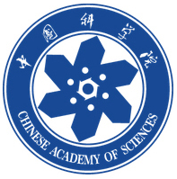
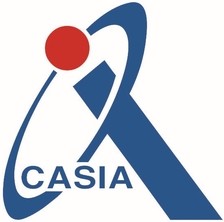

About
I’m a PhD student in computer science at Fudan University, advised by Prof. Zuxuan Wu at the Institute of Trustworthy Embodied Artificial Intelligence and the Fudan Vision and Learning Laboratory. My doctoral program is jointly run by Fudan and the Shanghai Innovation Institute. Currently, I’m a research intern at Robbyant, where I work with Dr. Kecheng Zheng.
Previously, I earned my master’s degree from the Institute of Automation, Chinese Academy of Sciences, and received my bachelor’s degree in automation from Hunan University, with a minor in robotics engineering.

Research
My research lies at the intersection of computer vision and robot learning. My long-term goal is to build robots that can learn from experience and apply what they learn to new tasks, environments, and embodiments.
I’m particularly interested in how robots can learn at scale, both by making better use of existing data and by gaining new experience on their own. My current research interests include agentic robot learning, world–action models, and vision–language–action models.
Publications
|
IEEE Robotics and Automation Letters (RA-L), 2026
|
|
|
IEEE/RSJ International Conference on Intelligent Robots and Systems (IROS), 2025
|
|
|
IEEE International Conference on Robotics and Automation (ICRA), 2025
|
Projects
|
Intel Grand Challenge on Indoor Robot Learning
First Prize, Manipulation Track (2023)
|
Experience
Education
PhD in Computer Science and Technology


MS in Control Science and Engineering
BEng in Automation, minor in Robotics Engineering
Awards
- National Scholarship (Graduate: 2025; Undergraduate: 2021, 2022)
- Outstanding Undergraduate Thesis, Hunan University (2023)
- First Prize, Manipulation Track, Intel Grand Challenge on Indoor Robot Learning (2023)
Professional Service
Conference Reviewer: ICRA, IROS
Journal Reviewer: IEEE Transactions on Robot Learning (T-RL), IEEE Robotics and Automation Letters (RA-L)